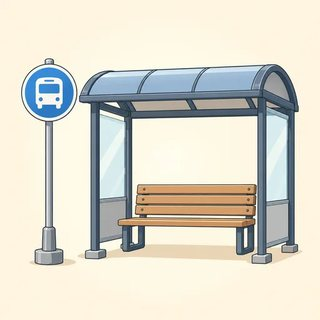
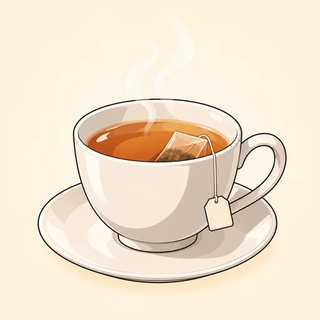
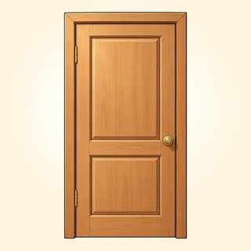
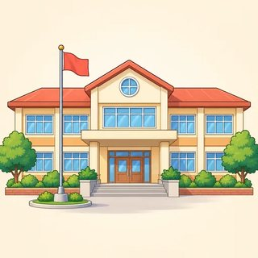

Telling Stories
Freeze a moment in the past. Tell what happened. Talk about how life used to be. Every good story starts here!
✏️ Write · 👂 Listen · 🗣️ Say · 👥 Work with a partner · 📖 Read
Your stories are your choice. You can tell a true story, or invent one, or use a character card. All are good. At home, open the online lesson and press 🔊 to listen.
I did well in .
I want to practice .
I can do it! Every week I will .
What Were You Doing? — Past Continuous
Class C14 cooking dinner
cooking dinner reading a book
reading a book watching TV
watching TV taking a shower
taking a shower sleeping
sleeping studying
studying dancing
dancing singing
singing playing the guitar
playing the guitar
waiting for the bus talking on the phone
talking on the phone raining
raining
| ✅ Yes | I / he / she / it was cooking. · You / we / they were cooking. |
|---|---|
| ❌ No | I wasn't sleeping. · They weren't working. |
| ❓ Question | Were you sleeping? · What were you doing at nine? |
| 💬 Answer | Yes, I was. / No, I wasn't. · Yes, they were. / No, they weren't. |
| 👯 Two at once | While I was reading, she was cooking. |
Two parts, every time: was/were + verb-ing. Not for know, like, want, need, love: say "I knew the answer."
What were the neighbors doing? Write the letter. One picture is extra.
1. Mr. Díaz 2. Mrs. Okafor 3. her son
4. the two students 5. Mr. Chen 6. the woman on the balcony
- a
- b
- c
- d
- e

- f

- g

1. At 8 p.m. I cooking dinner.
2. They watching TV.
3. She reading a book.
4. We waiting for the bus.
5. He studying at the library.
6. My sister and I talking on the phone.
Example: I was sleeping at ten. → I wasn't sleeping at ten.
1. They were listening carefully. →
2. She was working on Sunday. →
3. We were playing outside. →
4. You were listening to me! →
1. doing / you / what / were / at nine → ?
2. she / working / was / yesterday morning → ?
3. they / where / going / were → ?
4. raining / was / it / at 6 a.m. → ?
Answer about you (true or invented): Were you sleeping at midnight last night?
Example: I / read — my husband / cook → While I was reading, my husband was cooking.
1. the children / play — we / watch TV →
2. she / study — her brother / sing →
3. I / wait for the bus — it / rain →
My yesterday. What were you doing at 8 a.m., 1 p.m. and 9 p.m.? (true or invented) Write 3 sentences.
Ana: I called you at nine last night, but you didn't answer. What were you doing?
Ben: Sorry! I was taking a shower at nine. What were you doing so late?
Ana: I was cooking a big dinner. My brother was helping me in the kitchen.
Ben: Nice! And what was your sister doing? Was she helping too?
Ana: No, she wasn't. She was watching a movie while we were cooking. She only came for the food!
Ben: Ha! That sounds like her. It was raining here all evening, so I was just relaxing at home.
The mystery: Last night, between 7 and 9 p.m., someone ate the birthday cake in the school kitchen! It's a game. Your evening is invented.
Suspects: plan your evening together. Detectives: ask each suspect alone: "What were you doing at…?"
| Time | Where were we? | What were we doing? | Details (food? weather? TV?) |
|---|---|---|---|
| 7:00 | |||
| 7:30 | |||
| 8:00 | |||
| 8:30 | |||
| 9:00 |
🗣️ Detectives tell the class: "At eight, Ana said they were watching TV, but Omar said they were eating pizza!"
- ☐ say what I was doing at a time in the past: At 8 p.m. I was cooking.
- ☐ use was and were correctly with the -ing verb
- ☐ make "no" sentences: I wasn't sleeping.
- ☐ ask "What were you doing at…?" and "Were you…?" and answer
- ☐ join two actions with while
Last night: what were you doing at 7 p.m.? What were other people doing? (true or invented)
Something Happened! — when & while
Class C15- it started to rain
- the phone rang

someone knocked I dropped a cup
I dropped a cup the lights went out
the lights went out- 🤕 I fell
- ⏰ I woke up
 I met an old friend
I met an old friend
| Verb | ring | fall | begin | break | see | wake up | meet | go out |
|---|---|---|---|---|---|---|---|---|
| Past | rang | fell | began | broke | saw | woke up | met | went out |
———————————•————
| ——— long | past continuous: I was walking home… | while + the long action |
|---|---|---|
| • short | past simple: …it started to rain. | when + the short action |
| 📖 Story | I was walking home when it started to rain. While I was walking home, it started to rain. | |
When or While first? Put a comma ( , ) in the middle. One thing and then another? Both are past simple: When the movie ended, we went home.
- a

- b

- c
- d

- e
- f
- g
- h 🏃♀️
Long background = was/were + -ing. Short action = past simple.
1. I (read) when the lights went out.
2. While she was cooking, the phone (ring).
3. They were sleeping when the storm (begin).
4. He (drive) home when he saw the accident.
5. We (watch) TV when you called.
6. The baby (sleep) when the dog started to bark.
1. I was cooking ( when / while ) the doorbell rang.
2. ( When / While ) I was walking, I met an old friend.
3. She fell ( when / while ) she was running.
4. We were eating ( when / while ) the power went out.
5. ( When / While ) they were playing, it started to snow.
6. He was cutting vegetables ( when / while ) he cut his finger.
Example: I was taking a shower. + The phone rang. → I was taking a shower when the phone rang.
1. She was crossing the road. + A car stopped. →
2. We were watching the movie. + The baby woke up. →
3. I was waiting for the bus. + I saw an accident. →
Look at the pictures in Exercise 1. Write 5 sentences. Use when one time and while one time.
Sara: You'll never guess what happened to me yesterday!
Tom: What? Tell me!
Sara: I was carrying two cups of coffee when I tripped on the step.
Tom: Oh no! Did you drop them?
Sara: Yes! While I was falling, the coffee went everywhere. A man was walking past, and it landed on his shoes!
Tom: That's terrible! Was he angry?
Sara: No, he laughed! He helped me up while I was saying sorry a hundred times.
Tom: Ha! At least it ended well. ☕
Plan a short story: true, invented, or a story card. Write notes, not sentences.
| 1 · The scene ——— | Where were you? What were you doing? What was the weather doing? | |
|---|---|---|
| 2 · The event • | What happened? (when… / suddenly…) | |
| 3 · Then | What did you do? What did other people do? | |
| 4 · The end | How did it end? How did you feel? |
🗣️ A tells the story. B listens and says: "Oh no!" · "Really?" · "And then what happened?"
- ☐ use the long line (was/were + -ing) and the dot (past simple) in one sentence
- ☐ choose when or while
- ☐ put a picture story in order and tell it
- ☐ tell a "something happened" story in 6 sentences
- ☐ react to a story: "Oh no! And then what happened?"
A surprise! "I was … when …" (true or invented)
Then and Now — used to
Class C16
when I was a child play soccer
play soccer- play the guitar
 take the bus
take the bus- have a phone
 tell stories
tell stories- 📦 move (house)
- 🔄 change / a habit
| ✅ Yes | I / you / she / we / they used to walk to work. |
|---|---|
| ❌ No | I didn't use to like coffee. |
| ❓ Question | Did you use to play soccer? |
| 💬 Answer | Yes, I did. / No, I didn't. |
| 🔄 Then / now | I used to walk to work, but now I drive. |
After did / didn't → use to (no -d!). Say it "YOO-stuh." One time? Use the past simple: Yesterday I saw a movie.
| Carmen… | THEN 🕰️ | NOW 📱 |
|---|---|---|
| 1. lives on a farm | ||
| 2. walks to school | ||
| 3. has very long hair | ||
| 4. lives in a big city | ||
| 5. takes the bus to work | ||
| 6. hates vegetables | ||
| 7. loves vegetables | ||
| 8. tells stories to her son |
Did Carmen's family use to have a TV?
1. I live in Madrid, but now I live in London.
2. She like coffee, but now she loves it.
3. We play outside every day when we were young.
4. They have a phone, so they wrote letters.
5. He smoke, but he stopped last year.
6. I like spicy food, but now I eat it every day.
After did / didn't → use to. In a ✅ sentence → used to.
1. Did you play the piano?
2. I have a bicycle.
3. She didn't eat vegetables.
4. Where did they live?
5. We go to the beach every summer.
6. Did your brother play the guitar?
1. I didn't used to smoke.
2. She used to lived in Madrid.
3. We used to walk to school.
4. Yesterday I used to go to the doctor.
5. He use to have a car.
Example: (walk to work / drive) → I used to walk to work, but now I drive.
1. (live in a village / live in a city) →
2. (have short hair / have long hair) →
3. (play soccer / watch soccer) →
Your turn: write 2 sentences about you or a character.
Mia: This street has changed so much! Do you remember the old bakery?
Leo: Of course! There used to be a lovely little shop right on the corner. Now it's a coffee shop.
Mia: I know. We used to buy fresh bread there every morning. Did you use to walk here as a child?
Leo: Yes, I did! I used to play in this park with my brother. We didn't use to have phones, so we played outside all day.
Mia: Life used to be slower, didn't it? These days everyone is so busy.
Leo: True. But some things are better now. I didn't use to enjoy coffee, and now I love it! Do you want to try that new place?
Mia: Ha! Yes, let's. ☕
Choose one: 🧒 my childhood · 💼 a job I used to have · 🎭 a character card. You don't need to explain your choice.
| THEN 🕰️ (I used to… / I didn't use to…) | NOW 📱 (…but now I…) |
|---|---|
| 1. | 1. |
| 2. | 2. |
| 3. | 3. |
| 4. |
👥 Tell your partner. Your partner asks two questions: "Did you use to …?"
🗣️ Two truths and a lie: say 3 "used to" sentences. One is false! Your partner guesses.
My partner used to .
- ☐ say what I (or a character) used to do: I used to play soccer.
- ☐ make "no" sentences: I didn't use to like coffee.
- ☐ ask "Did you use to…?" and answer "Yes, I did. / No, I didn't."
- ☐ write use to after did / didn't
- ☐ compare: I used to…, but now I…
Something I (or a character) used to do, and one thing that is different now.
You can freeze a moment in the past, tell a story with a background and a surprise, and talk about how life used to be. Look at your three "I can…" lists. Is a box empty? Tell your teacher. Look at your goal on the first page, too. Practice at home with the online lessons 5.1, 5.2 and 5.3 and the 🔊 buttons.